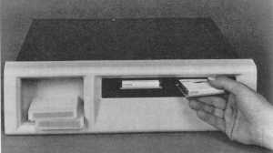

|
|
|
This software is a MSDOS device driver for the Digital TU58 digital cassette tape drive. Let me repeat that in a little more detail, because this may not be exactly what you think. If you have one of the DEC TU58 table top drives with the RS-232 interface, you can connect it to a COM port on a standard PC and use this device driver with MSDOS to make the TU58 look like a normal, removable, block mode mass storage device.  The TU58 will be assigned a MSDOS drive letter (two, actually - one for each unit), and you can use the usual MSDOS FORMAT command to initialize a MSDOS file system on a TU58 cassette. After that you can use ordinary DOS commands and programs to copy files to a tape, rename them, delete them, edit them, and anything else you can imagine. The TU58 tape drives look to MSDOS like small (256K byte!), slow (really slow!) diskette drives.This is not a program for MSDOS which allows you to read TU58 tapes from your PDP-11 or VAX on a PC. It won't help you exchange data between a PC and a PDP or VAX in any way. Further, this project has no connection with the Spare Time Gizmos TU58 Emulator (well, I guess you could hook up an emulator to a PC using this driver, but that'd be really silly!). Why do such a thing? As an exercise to learn how to write MSDOS device drivers. At one time I was very interested in this topic, and writing a driver for real hardware is infinitely more fun than making up a "pseudo" driver for imaginary devices. I had a table top TU58 drive sitting on the shelf gathering dust, and it was trivial to interface to a PC with a simple RS-232 connection, so the rest is history. Installing the driver on your MSDOS system is simple - just add a line for TU58.SYS to your CONFIG.SYS file. The TU58 driver accepts four command line options:
For example, the line:
would configure a TU58 drive connected to COM1 at 38.4kBps and enable debug output.
THE ENTIRE TU58 DRIVER, INCLUDING SOURCE CODE, MAY BE COPIED AND DISTRIBUTED UNDER THE TERMS OF THE GNU PUBLIC LICENSE.The complete TU58 driver for MSDOS, including source code, is available from our Spare Time Gizmos Download page. It is written in mixed 80x86 assembly and C, and you'll need both Borland Turbo C and Turbo Assembler to rebuild it from sources. |
Visit these Spare Time Gizmos
|